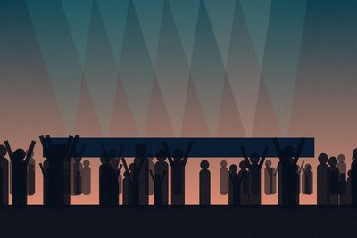
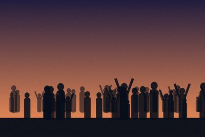
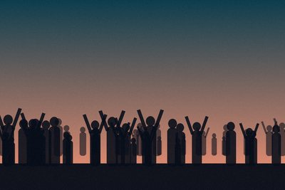
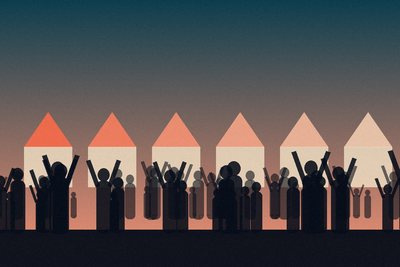
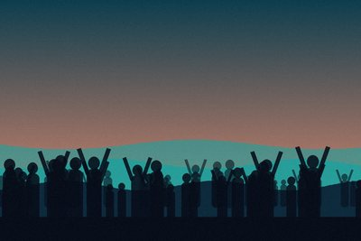
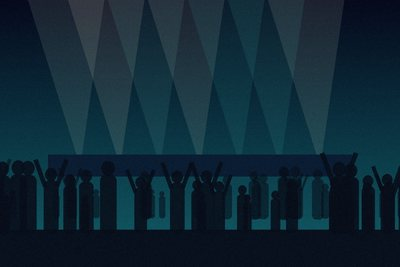

Saltar al contenido
Menú
Inicio
Artistas
Horarios
Entradas
Galería
Contacto
Propuestas
Imagenes de nuestros mejores momentos

El escenario Llevant durante el concierto de Marea Viva, edición de 2025.

Atardecer en la Cala durante la edición 2025.

El publico disfrutando del atardecer.

Mercado artesano durante el evento del pasado año.

El publico en la playa de la Almadraba.

Durante el cierre nocturno el publico seguía queriendo fiesta.